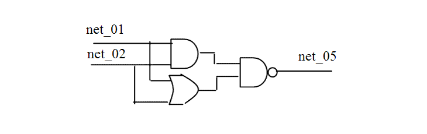

| Description | This rule fires when Leda detects a reconvergent path in the design. A net that branches into two different gates and converges again can produce a reconvergent path. You can activate this rule to double check reconvergent paths and avoid competition in the circuit. Arguments:
%s1 is the hierarchy name of the starting point of the reconvergent path. Source Position: The position is the line in which the starting line of the reconvergent path is defined. |
| Policy | DESIGN |
| Ruleset | STRUCTURE |
| Language | VHDL/Verilog |
| Type | Hardware |
| Severity | Error |
This is an example of invalid Verilog code, followed by a circuit diagram that illustrates the problem:
module ntl_str32_top; ... wire net_01, net_02, net_03, net_04, net_05; and I1 (net_03, net_01, net_02); or I2 (net_04, net_01l, net_02); nand I3(net_05, net_04, net_03); // NTL_STR32 fires -- the path of I1/I2 -> I3 is a reconvergent path endmoduleNote: This rule checks re-convergent path to output ports, flip-flops, and latches.
9: output DATA_OUT0, DATA_OUT1;
^
GATE_NTL_STR32.v:9: STRUCTURE> [ERROR] NTL_STR32: Reconvergent path
detected between top.DATA_OUT0
--- And top.DATA_IN0 (file: GATE_NTL_STR32.v, line: 10)
--- One of the paths is: top.DATA_IN0 (file: GATE_NTL_STR32.v,
line: 10)
--- top.INST_BUF0.~buf0 (file: GATE_NTL_STR32.v, line: 15)
--- top.INST_AND0.A (file: GATE_NTL_STR32.v, line: 23)
--- top.INST_AND0.~band0 (file: GATE_NTL_STR32.v, line: 23)
--- top.INST_AND2.A (file: GATE_NTL_STR32.v, line: 26)
--- top.INST_BUF5.~buf0 (file: GATE_NTL_STR32.v, line: 20)
--- top.INST_AND2.A (file: GATE_NTL_STR32.v, line: 26)
--- top.INST_AND2.~band0 (file: GATE_NTL_STR32.v, line: 26)
--- top.NET_8 (file: GATE_NTL_STR32.v, line: 11)
--- top.INST_BUF6.~buf0 (file: GATE_NTL_STR32.v, line: 34)
--- top.DATA_OUT0 (file: GATE_NTL_STR32.v, line: 9)
--- One of the paths is: top.DATA_IN0 (file: GATE_NTL_STR32.v,
line: 10)
--- top.INST_BUF0.~buf0 (file: GATE_NTL_STR32.v, line: 15)
--- top.INST_AND1.A (file: GATE_NTL_STR32.v, line: 24)
--- top.INST_AND1.~band0 (file: GATE_NTL_STR32.v, line: 24)
--- top.INST_NOT0.A (file: GATE_NTL_STR32.v, line: 25)
--- top.INST_NOT0.~not0 (file: GATE_NTL_STR32.v, line: 25)
--- top.INST_AND2.B (file: GATE_NTL_STR32.v, line: 26)
--- top.INST_AND2.~band0 (file: GATE_NTL_STR32.v, line: 26)
--- top.NET_8 (file: GATE_NTL_STR32.v, line: 11)
--- top.INST_BUF6.~buf0 (file: GATE_NTL_STR32.v, line: 34)
--- top.DATA_OUT0 (file: GATE_NTL_STR32.v, line: 9)
In the above sample output,
Secondary Message - 1
And %s2
Argument - 1
%s3 is the hierarchy name of the ending point of the reconvergent path.
Source Position - 1
The position is the line in which the ending point is defined.
Secondary Message - 2
One of the path is: $%s3
Argument - 2
%s3 is the hierarchy name of the signal in the path
Source Position - 2
The position is the line in which the signal is declared.
Secondary Message - 3
%s4
Argument - 3
%s3 is the hierarchy name of the signal in the path
Source Position - 3
The position is the line in which the combinational logic is instantiated.
